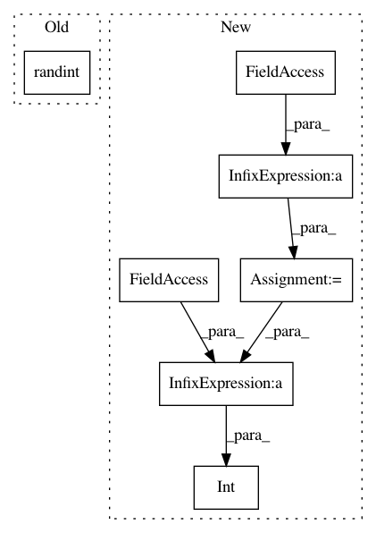

cd19f843caff39e136766a353807ab3a7d4c6a57,spynnaker/pyNN/models/spike_source/spike_source_poisson_vertex.py,SpikeSourcePoissonVertex,_write_poisson_parameters,#SpikeSourcePoissonVertex#Any#Any#Any#Any#Any#Any#Any#,315
Before Change
spec.write_value(incoming_mask)
// Write the random back off value
spec.write_value(random.randint(0, min(
self._n_poisson_machine_vertices,
MICROSECONDS_PER_SECOND // machine_time_step)))
// Write the number of microseconds between sending spikes
total_mean_rate = numpy.sum(self._rate)
After Change
spec.write_value(incoming_mask)
// Write the offset value
max_offset = (
machine_time_step * time_scale_factor) // _MAX_OFFSET_DENOMINATOR
spec.write_value(
int(math.ceil(max_offset / self._n_subvertices)) *
self._n_data_specs)
self._n_data_specs += 1
In pattern: SUPERPATTERN
Frequency: 3
Non-data size: 7
Instances
Project Name: SpiNNakerManchester/sPyNNaker
Commit Name: cd19f843caff39e136766a353807ab3a7d4c6a57
Time: 2019-01-17
Author: Andrew.Rowley@manchester.ac.uk
File Name: spynnaker/pyNN/models/spike_source/spike_source_poisson_vertex.py
Class Name: SpikeSourcePoissonVertex
Method Name: _write_poisson_parameters
Project Name: SpiNNakerManchester/sPyNNaker
Commit Name: cd19f843caff39e136766a353807ab3a7d4c6a57
Time: 2019-01-17
Author: Andrew.Rowley@manchester.ac.uk
File Name: spynnaker/pyNN/models/neuron/abstract_population_vertex.py
Class Name: AbstractPopulationVertex
Method Name: _write_neuron_parameters
Project Name: pfnet/optuna
Commit Name: b7d464b5c7536b05e2794a83c1b2b8d8da9c3041
Time: 2020-02-09
Author: hayata.pri.yamamoto@gmail.com
File Name: optuna/samplers/random.py
Class Name: RandomSampler
Method Name: sample_independent